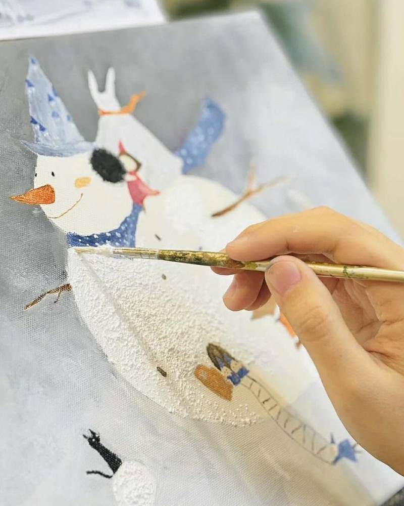
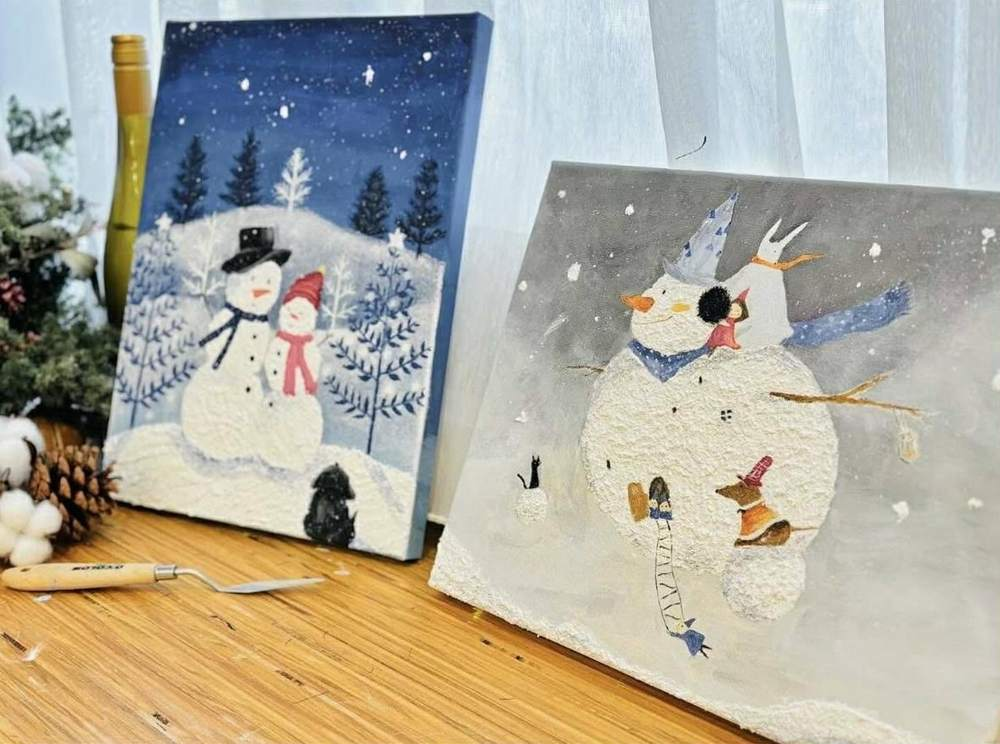
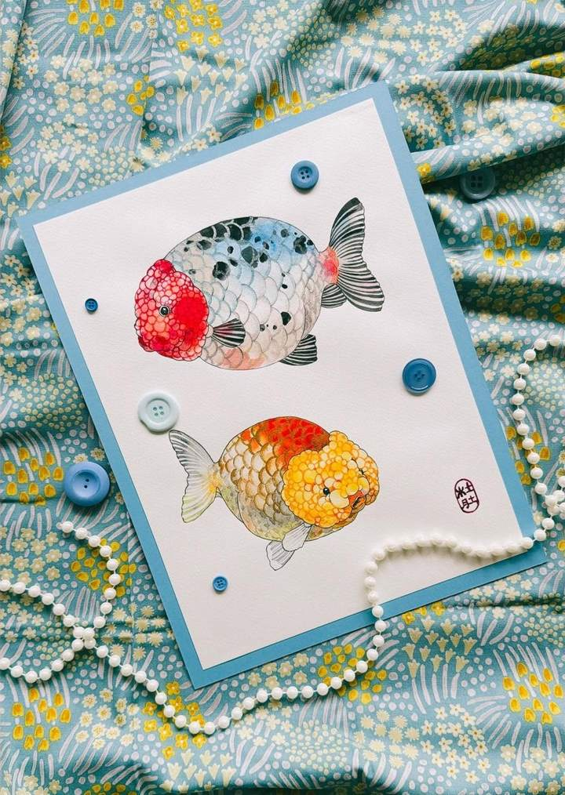
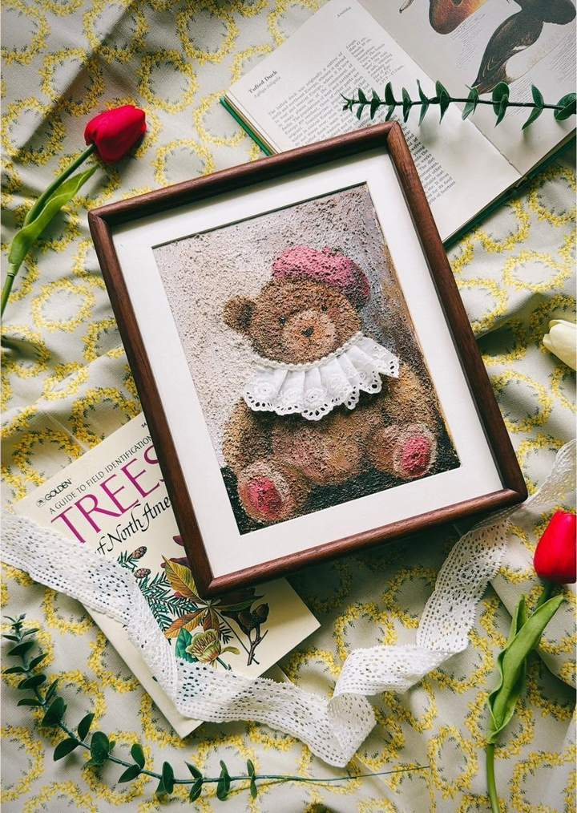

在竹北陪孩子畫畫，已經十年了
學齡前塗鴉、興趣繪畫、進階升學和小孩縫紉。小班上課，老師依孩子的年齡帶創作。
雪人一家的畫布，2025 年 11 月
孩子幾歲，適合哪一班？
年齡依快樂轉圈圈公布的課程介紹。點一班，就能看那一班上什麼、什麼時候上。
小手寶寶班和升學美術的年齡，請用 LINE 問老師。
這個寒假，孩子可以畫什麼？
2027 寒假課程從 1 月 21 日上到 2 月 3 日，有兩個系列，也可以只上週六的單堂。12 月 20 日前報名享早鳥 88 折，兩人同行 9 折。
- 輕質感美學4.5 歲以上，適合零基礎的孩子3,000 元起
- 大師級美學小一以上，適合畫畫老手5,100 元起
- 週六單堂只能上週六的孩子1,680 元起
誰在教孩子畫畫？
「我希望來這裡學畫畫的人，都能感受到快樂。」
快樂轉圈圈的負責人和班主任是郭旻瑄老師，大家叫她旻旻老師。她從國小到大學都讀美術班，大學畢業兩年後成立了快樂轉圈圈。
家長在 Google 地圖留了 107 則評價，平均 5.0 顆星。
課堂上會畫出什麼？
照片都來自快樂轉圈圈的 Facebook 和 Instagram。




怎麼開始？
加 LINE 或打電話
告訴老師孩子幾歲、想學什麼。
確認班級和時段
跟老師確認適合的班級，還有課表上方便的時段。
來教室上課
照約好的時段，到竹北文化街的教室上課。